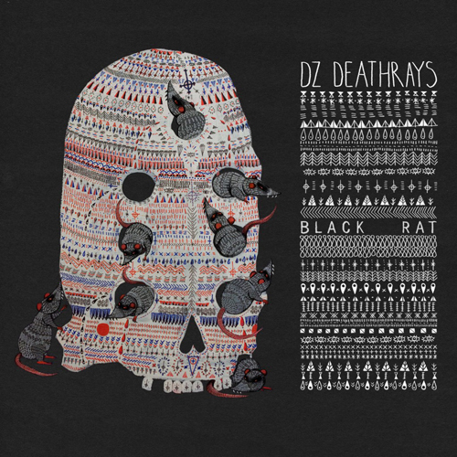

|  |
DZ Deathrays Black Rat I OH YOU 02 May 2014 Review by Luke Stefanac |
The sophomore curse is looking more and more like a myth with the arrival of DZ Deathray’s second album, ‘Black Rat’. Hailing from Brisbane, the two piece have been honing their skills on stage and off, which is starting to show. Receiving worldwide praise and attention, the band has received airplay on radio stations such as BBC Radio 1, hinting at bigger things expected to come for them. ‘Black Rat’ screams refinement. The punk duo have displayed a desire for bigger things, with the album showcasing an expansion of their sound. If you’re reading this and thinking that they’ve “matured” or “gone soft”, you’d be completely wrong. Shane Parsons and Simon Ridley haven’t strayed from their thrash rock roots, but have become an even bigger wall of sound - a truly incredible feat for just a two piece. But this fact doesn't stop them at all, with the guitar-wielding Parsons creating soundscapes on top of the foundation Ridley provides. Opening with the title track Black Rat, DZ Deathrays command the attention of the listener immediately, a very fitting start for such a raucous event. Dropping you straight into the deep end, the song delivers the heavy riffage expected of the two while demonstrating said sonic expansion, proving to be a perfect taste of the rest of the album. This sentiment is illustrated by other tracks such as Less Out Of Sync and Fixations, with the prevalent rock sensibilities merging with influences from other genres. But the biggest evolution of their sound is from first single Northern Lights. Venturing into shoegaze territory, the anthem is a lush and epic soundscape driven by the effects-laden guitar pushed forward by the beating of the drums. Opting to sing rather than scream, the vocals delivered by Parsons complete the song, as the delicate delivery lends itself towards the anthemic feel rather than detracting from it. And then there are the heavy hitters of the album, the songs that just rip your head off. With the help of producer Burke Reid, the duo have magically managed to bottle their explosive live shows, with the energy unleashed just breaking at the seams. Reflective Skull infuses dance and punk in a flavour reminiscent of Liars, thrashing about wildly with no respite. The same can be said of the monstrous Ocean Exploder. One of the many highlights of the album, this track is just absolutely massive - there’s just no other way to describe it. Already proven to be a favourite live, its raw riffage and thundering drums explode speakers and minds alike, with relentless screams furthering its cause. ‘Black Rat’ proves to be a varied yet cohesive experience that solidifies their growing songwriting ability. DZ Deathrays have delivered a masterpiece for their second effort, flying in the face of naysayers that say rock is dead. Evidently, it is more alive than ever. With an Australian tour around the corner, the duo are set to blow minds all around the country. And coming from experience, you will hugely regret missing it. Originally written for City And Sound. |